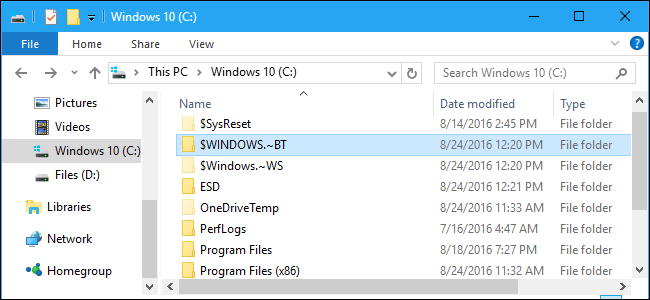
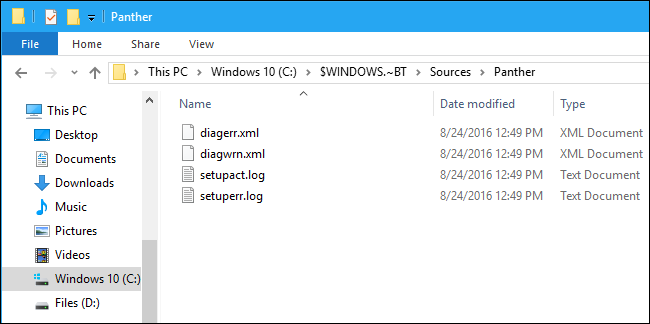
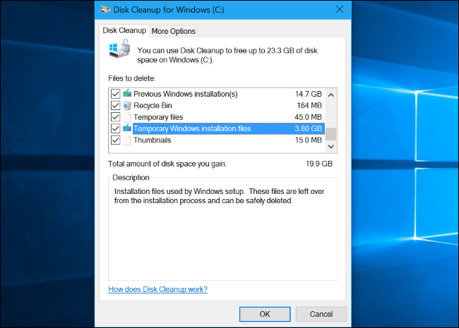

How-To Geek
What Is the $WINDOWS.~BT Folder, and Can You Delete It?

The $WINDOWS.~BT and $WINDOWS.~WS folders are associated with the Windows 10 upgrade process. They may appear on either Windows 7, 8, or 10, using gigabytes of disk space.
These are hidden files, so you’ll have to show hidden files in Windows Explorer or File Explorer to see them.
On Windows 7 and 8
![]()
During the free Windows 10 upgrade period, Windows 7 and 8 automatically downloaded Windows 10 installation files and stored them in the $WINDOWS.~BT folder. When you agreed to the free upgrade, it could start quickly using the already downloaded installation files.
The free upgrade period is now over, so you couldn’t use these files to upgrade to Windows 10 even if you wanted to.
Microsoft should eventually remove these files if they’re still present on any Windows 7 or 8 systems, but they may still be sticking around for now.
On Windows 10
![]()
On Windows 10, the $WINDOWS.~BT folder contains your previous Windows installation. These files are used to downgrade to a previous version of Windows, or a previous build of Windows 10.
It’s similar to the Windows.old folder, which contains files from your previous Windows installation. In fact, you’ll see both folders after upgrading to Windows 10–both Windows.old and $WINDOWS.~BT folders.
It also contains log files. For example, if you download and run the media creation tool, it creates a $WINDOWS.~BT folder with a few setup log files. That media creation tool also creates a $WINDOWS.~WS folder that contains most of the Windows setup files.
Windows should automatically delete these files to free up space after ten days in the Anniversary Update, or thirty days if your PC hasn’t upgraded to the Anniversary Update yet.

Can You Delete It, and How?
![]()
Warning: If you choose to delete the $WINDOWS.~BT folder on Windows 10, you won’t be able to downgrade to the previous build of Windows 10 or previous version of Windows your PC had installed. The option to roll your PC back at Settings > Update & Security > Recovery will vanish. However, Windows 10 automatically deletes these files after ten days anyway.
If you want to delete these files, though, you can. But you shouldn’t just delete them the normal way. Instead, you should use the Disk Cleanup tool included with whatever version of Windows you’re using.
To do so, access the Disk Cleanup tool and click “Clean Up System Files”. Check the following items in the list and remove them:
- Previous Windows installation(s): This deletes the $WINDOWS.~BT and Windows.old folders on Windows 10.
- Temporary Windows installation files: This deletes the $WINDOWS.~BT folder on Windows 7 and 8, and the $WINDOWS.~WS folder on Windows 10.
Click “OK” to remove the files.

If the $WINDOWS.~BT folder is still present afterwards, it likely just contains a few spare log files–or now-useless setup files on Windows 7 or 8–and you can try deleting it manually from File Explorer. Just right-click it and select “Delete”.
![]()
![]()
![]()
![]()
![]()
![]()
![]()
![]()
![]()

I tried to find these files and they don't exist. I know that Windows 10 activation icon is still running, as well as when I boot I see that Windows 10 is an option along with Windows 7. Since my board vendor won't support 10 for my board, then I'd like to remove all of the Windows 10 stuff, especially if it is taking up gigabytes of storage!
Chris.
I found this C:\$WINDOWS.~ST. I tried to search and came up with nothing. I have upgraded to Windows 10 already, but not Anniversary update. Anyone shed any light on it? Thanks.
Steven